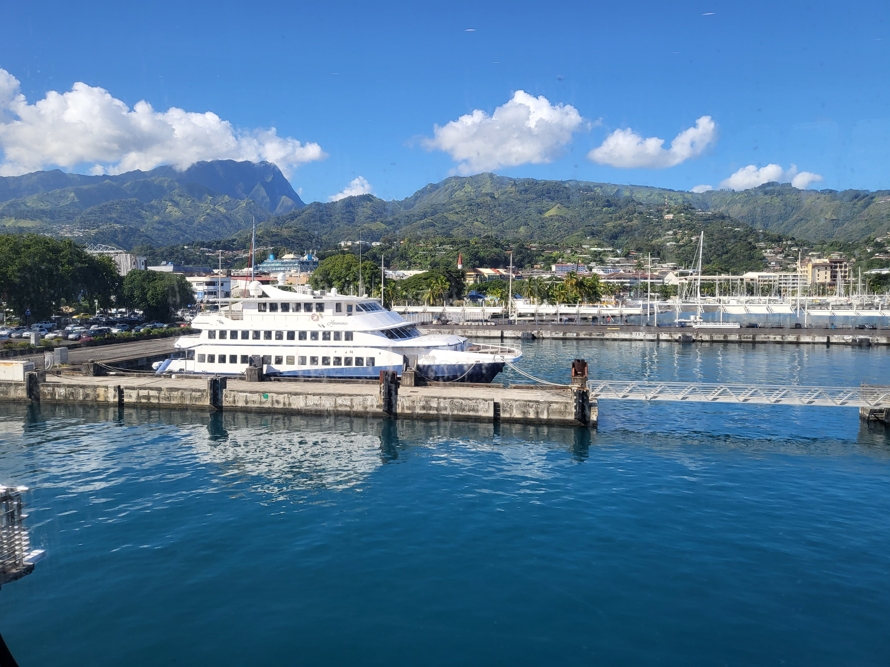
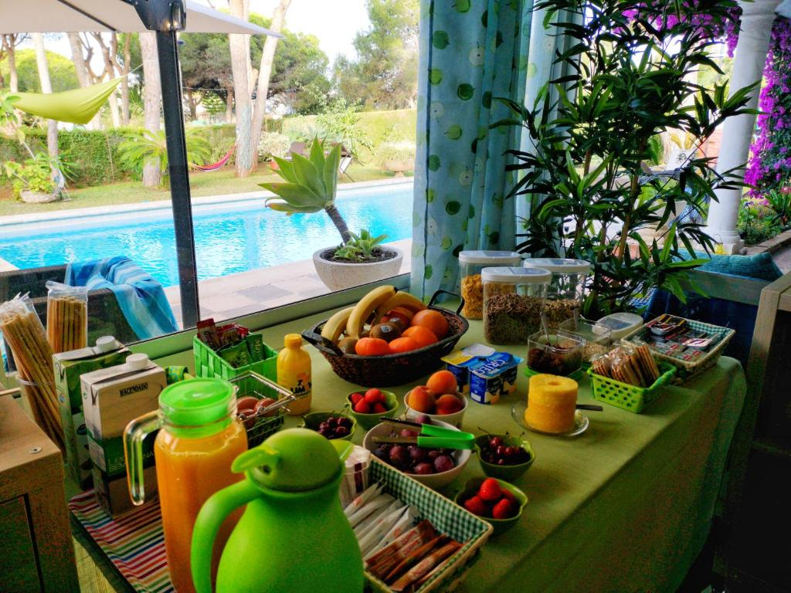
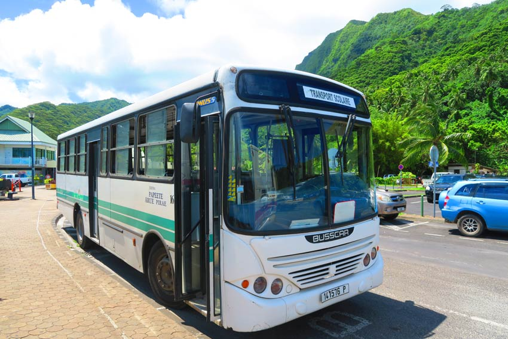
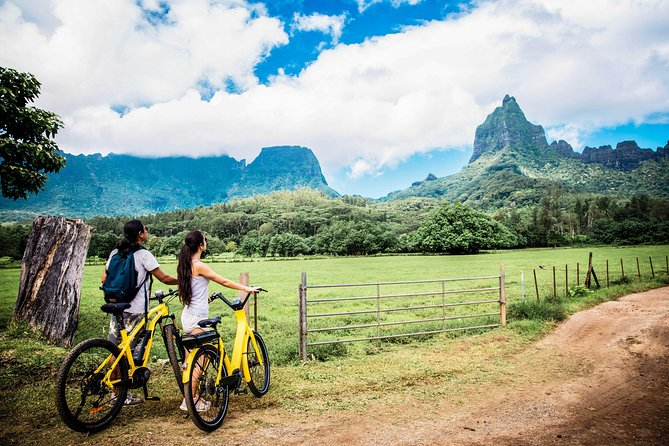

Journey to Taniti

Photo by Celina Reeb, taken in 2022. Mo'Orea.
Image source: "Six Predictions For Summer Air Travel" by Ben Baldanza,
Forbes
The majority of visitors arrive in Taniti by air,
landing at our modest airport that currently accommodates small jets and propeller planes.
Exciting plans are underway to expand the airport, which will allow larger jets to land in the coming years.
For those who prefer sea travel, a charming cruise ship docks at Yellow Leaf Bay for one night each week,
offering a unique way to experience the island's allure.
Lodging

Photo by Celina Reeb, taken in 2022. Papeete, Tahiti.
Photo source: Hilton Hotel Tahiti,
(https://www.hilton.com/en/hotels/ppthihh-hilton-hotel-tahiti/photo)

Photo source: Hotel El Nacar, [Link to
Booking.com](https://www.booking.com/hotel/es/el-nacar.en-gb.html?activeTab=photosGallery)
Taniti offers a diverse range of accommodations, from affordable hostels to a large,
four-star resort. The island features numerous small, family-owned hotels,
along with a growing selection of bed and breakfasts. All lodging options are strictly
regulated and routinely inspected by the Tanitian government to ensure high standards.
For information regarding local hostels, please call
+998-793-554-8326.
For information regarding our island resort, please call
+998-634-532-905.
For information regarding local bed & breakfasts, please call
+998-235-551-105.
Getting Around

Photo source: X Days in Y,
(https://xdaysiny.com/moorea-travel-guide-french-polynesia/2/)

Photo source: Viator.com,
(https://www.viator.com/en-PH/tours/Papeete/Electric-Bike-Rental-Moorea/d5181-105619P1)
Photo source: tahiti.com,
(https://www.tahiti.com/activities/tahiti-automatic-car-rental-with-a-c-3200)
Public buses provide daily transportation within Taniti City from 5 a.m. to 11 p.m.,
while private bus services cover the rest of the island. Taxis are readily available
throughout Taniti City, and car rentals can be arranged at a local agency near the airport.
Bicycle rentals, including helmets (which are legally required), are offered by several vendors.
Taniti City’s flat terrain makes it highly walkable, offering an ideal environment for pedestrians.
Many visitors stay near Merriton Landing, a popular area that is easily navigable on foot.